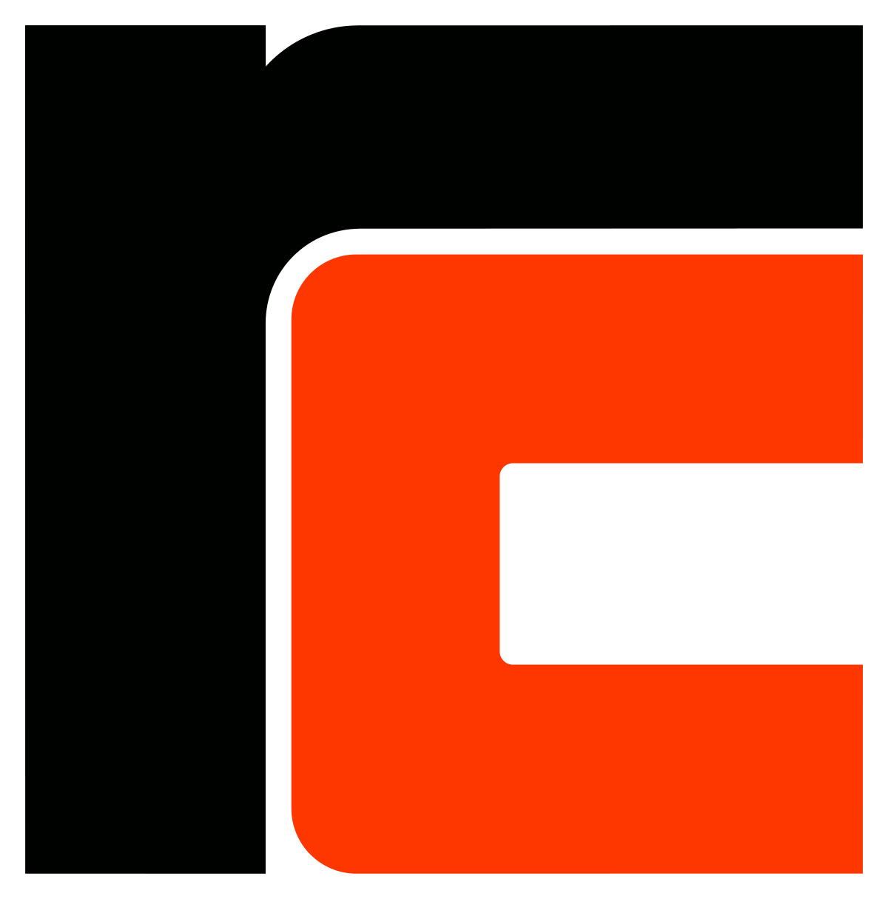
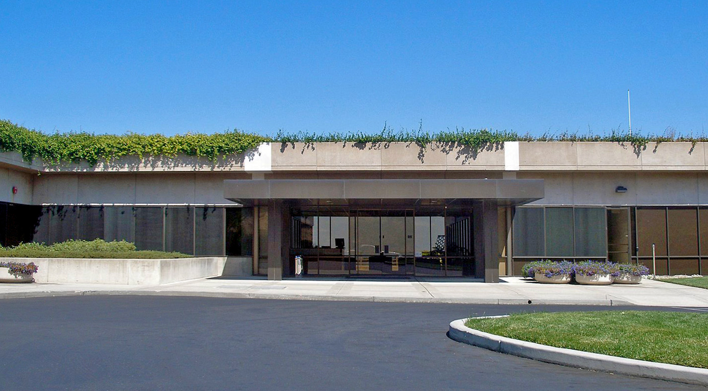
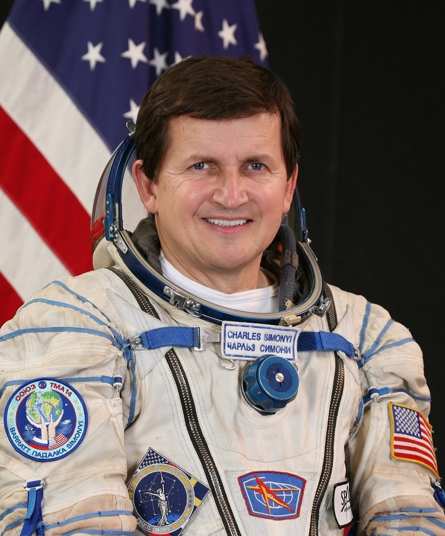

Charles Simonyi
Charles Simonyi 1948. szeptember 10-én. született. Szoftverfejlesztő, Excel és a Word megalkotója, a szándékorientált programozás kutatója. Ő volt a Nemzetközi Űrállomás ötödik és hetedik űrturistája.
Édesapja
Simonyi Károly Kossuth és Állami Díjas tudós, aki Elméleti villamosságtan Elektrofizika könyvtrilógiájával 4 évtizedre megalapozta és meghatározta a villamosmérnöki tudományokat és oktatást. Mérnökgenerációk legendás hírű tanára volt.
A középiskolás évek meghatározóak voltak számára, kamaszként egy számítógépes laboratóriumban dolgozott éjjeliőrként. 16 évesen fordítóprogramokat írt, amit egy vállalat megvásárolt. 17 évesen Dániába utazott, ahol programozóként dolgozott a RC Regnecetralen-nél.
1968-ban az Amerikai Egyesült Államokba költözőt ahol a Kalifornia Egyetemen, Berkeleyben szerzett diplomát alkalmazott matematikából. Több híres emberrel is tanultak itt mint például:
- Gordon E. Moore (Moore-törvény)
- Andrew S. Tanenbaum (a MINIX megalkotója)
- Gróf András (Intel későbbi főnöke)
Majd a Stanford Egyetemen doktorált számítástudományból.


1972-ben a Xerox Palo Alto-i kutatóközpontjában kapott állást, Alan Kay és Robert Metcalfe mellett. Az 1974-ben Butler Lampsonnal közösen létrehozták első alakhű (WYSIWYG) szövegszerkesztőt, amely a Xerox által kifejlesztett Alto nevű személyi számítógépen futott. Az volt a lényege, hogy pontosan ugyan azt látta a felhasználó a gépen mint ami a végeredmény lesz.
1981-ben Metcalfe javaslatára megkereste Bill Gates-t, aki munkát kínált neki a Microsoftnál. 1981-től vezető fejlesztőként csatlakozott a Microsofthoz, ahol feladata az volt, hogy hozzon létre egy alkalmazásfejlesztéssel foglalkozó részleget. Simonyi vezetésével fejlesztették ki a Microsoft legismertebb termékeit a Word-öt és az Excel-t. Majd a cégnél ő vezette be a programozás egyik új fajtáját, az objektumorientált programozást, amely hatékonyabbá tette a fejlesztői munkát, melyet a Xeroxnál tanult meg, és kifejlesztette a magyar jelölést a változók megnevezésére.
1982-ben megkapta az amerikai állampolgárságot. Karrierje során jelentős magánvagyonra tett szert.
2002-ben ott hagyták a Microsoftot Gregor Kiczales-szel a Brit Columbiai Egyetem professzorával, hogy megalapítsák az Intentional Software Corporationt.

Űrhajós pályájája
Első látogatása a Nemzetközi Űrállomáson 2007. április 7. és 21. között volt, a második pedig 2009. március 26. és április 8. között. A mai napig ő a második magyar űrhajós és az ötödik és hetedik űrturista. A világtörténelemben az egyetlen ember, aki kétszer is ellátogatott a világűrbe űrturistaként. A harmadik magyar űrhajós a tervek szerint legközelebb 2025-ben utazik a Nemzetközi Űrállomásra.
Kitüntetései:
- George Washington-díj (Amerikai Magyar Alapítvány, 2002)
- Neumann-plakett (NJSZT, 2003)
- Magyar Köztársasági Érdemrend nagykeresztje (2007)
- 2008-ban megkapta a Győr-Moson-Sopron Meggyéért Kék Szalag kitüntető címet
Alapítványok
Magyarországon két díjat hozott létre a kreatív gondolkodás elismerésére, a Charles Simeone Kutatói Ösztöndíjat és az édesapja emlékére évente odaítélt Carolly Simeone Díjat, a fizikus vagy mérnök kiemelkedő tudományos teljesítményéért, illetve tudományos és oktatási munkásságáért 2000-ben 25 millió forintot ajánlott fel a tudományos kutatás finanszírozására. A Magyar Tudományos Akadémia 2004-ben külső taggá választotta.
Professzori ösztöndíjat alapított az Oxfordi Egyetemen Charles Simonyi Professor of the Public Understanding of Science néven, majd 2004 januárjában 50 millió dollárral létrehozta a Charles Simonyi Művészeti és Tudományos Alapítvány-t.